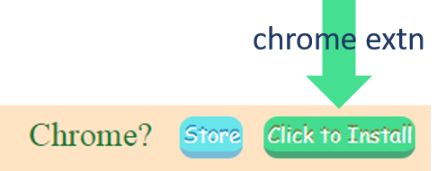

Immanuel's Trial on (WebRTC)
Its a screen sharing app - derived from Muaz's!
#123456789
PreRequisites
Firefox? Please use version 52 or higher. Also use HTTPs. (Highly Recommended - Very Simple)
Chrome?
Store
Click to Install
Steps For Chrome: [Sad... :( ]
-
1. Install Chrome extension

2. after installtion..(below screen shot)

3. open chrome with usermedia enabled..
windows (PC): chrome.exe --enable-usermedia-screen-capturing
mac: sudo /Applications/Google\ Chrome.app/Contents/MacOS/Google\ Chrome --enable-usermedia-screen-capturing